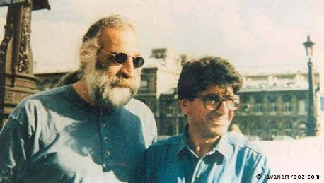

سعی ما بر این است تا با جمعآوری، حفظ و مرمت نوارهای قدیمی، از این گنجینههای فراموش شده محافظت کنیم و آنها را در دسترس علاقهمندان قرار دهیم. این تلاش، ادای دینی است به هنرمندانی که برای موسیقی این سرزمین زحمت کشیدهاند.

درنگی کوتاه در زمانهای پر از موسیقی، برای شنیدن صدای اصیل ایران
About us
بعضی صداها، بعضی نغمهها و بعضی اجراها در دل تاریخ موسیقی ایران چنان عمیق نشستهاند که با گذشت دههها، هنوز زنده و تاثیرگذار باقی ماندهاند. شاید راز ماندگاری این اجراها در سادگی، صداقت و حس نابی باشد که در تکتک نُتهایشان جریان دارد.
برنامه گلها فقط یک برنامه موسیقی نبود؛ یک پل فرهنگی بود که هنر اصیل را به زندگی روزمره مردم آورد.
در اجرای زنده، نوازنده و خواننده بیواسطه با هم ارتباط برقرار میکردند و حسوحال اجرا زندهتر بود.
در برخی از اجراهای خصوصی، موسیقی از چارچوبهای رسمی خارج میشد و به حالت طبیعیتر و صمیمیتری نزدیک میگشت.
در روزهایی که اینترنت و پلتفرمهای دیجیتال نبودند، این کاستها تنها راه دسترسی به موسیقی مورد علاقه بودند.
بعضی از این اجراها هرگز به صورت رسمی منتشر نشدند و فقط در قالب نوارهای دستنویس بین مردم میگشتند.
یک آهنگ در یک اجرا کاملاً آرام و در اجرای دیگر کاملاً پرانرژی اجرا میشد و این تفاوتها جذابیت را دوچندان میکرد.
عمر برخی نوارهای کاست، موسیقی ایرانی را از نابودی نجات داد. در این بخش به سراغ آرشیوهای شخصی و مجموعههای خانوادگی میرویم که گنجینههای پنهان موسیقی ما را در خود جای دادهاند.
سعی ما بر این است تا با جمعآوری، حفظ و مرمت نوارهای قدیمی، از این گنجینههای فراموش شده محافظت کنیم و آنها را در دسترس علاقهمندان قرار دهیم. این تلاش، ادای دینی است به هنرمندانی که برای موسیقی این سرزمین زحمت کشیدهاند.
در آرشیو گلها، راز نغمههایی نهفته است که از دل تاریخ موسیقی ایران زمین برخاستهاند. این آرشیو، نه تنها گنجینهای از صداها، بلکه پنجرهای به گذشتههای پرافتخار موسیقی این سرزمین است. با ما همراه شوید تا با شنیدن این نغمهها، به سفری در زمان برویم و از اصالت و زیبایی موسیقی ایرانی لذت ببریم.
مدیر آرشیو گنجور
Oct 23, 2026 — by golnayarangam
in Uncategorized
Stay in the loop with everything you need to know.
Sign up